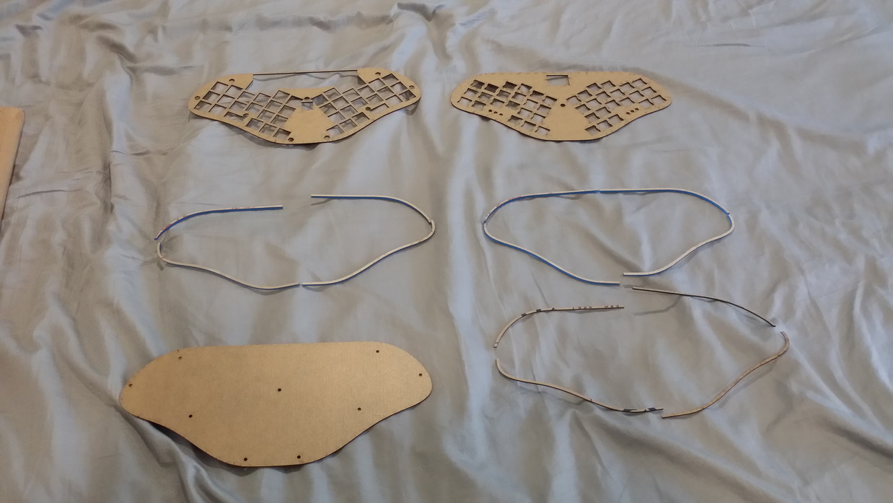
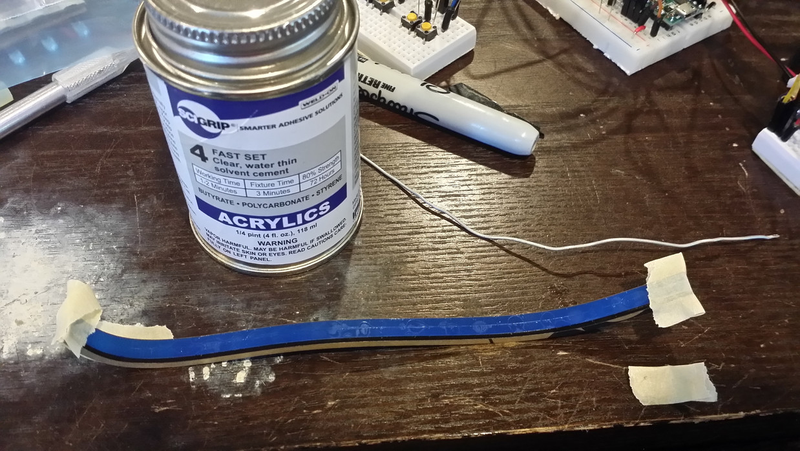
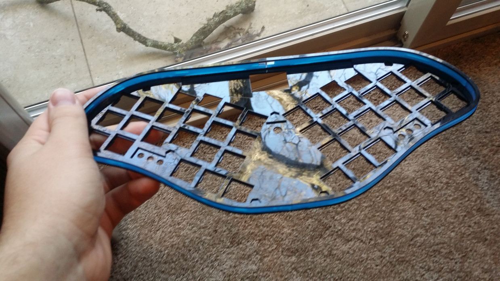
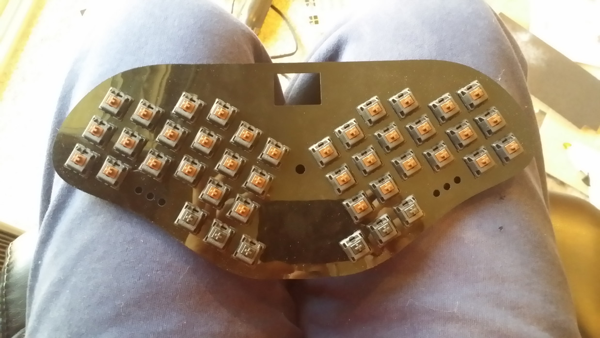
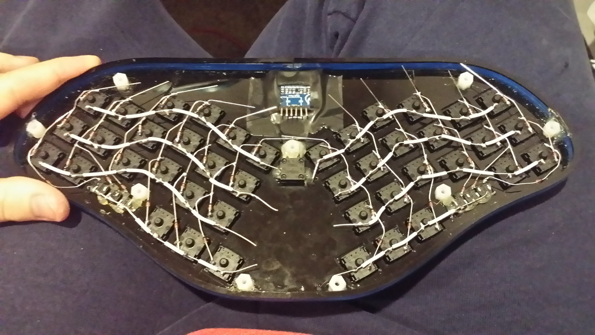
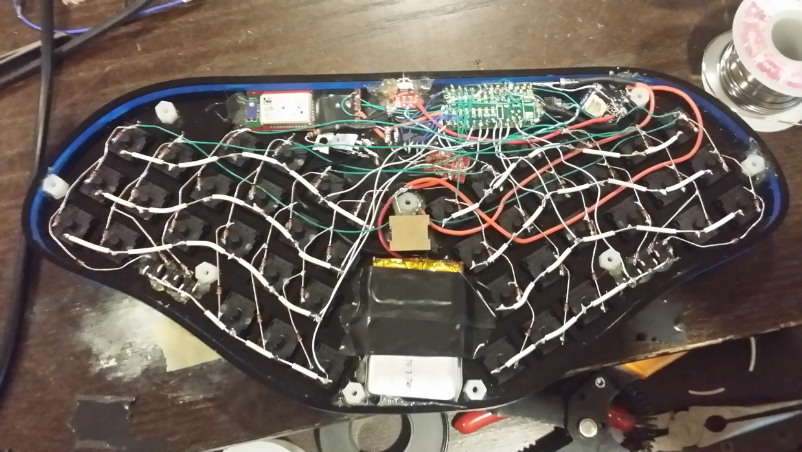
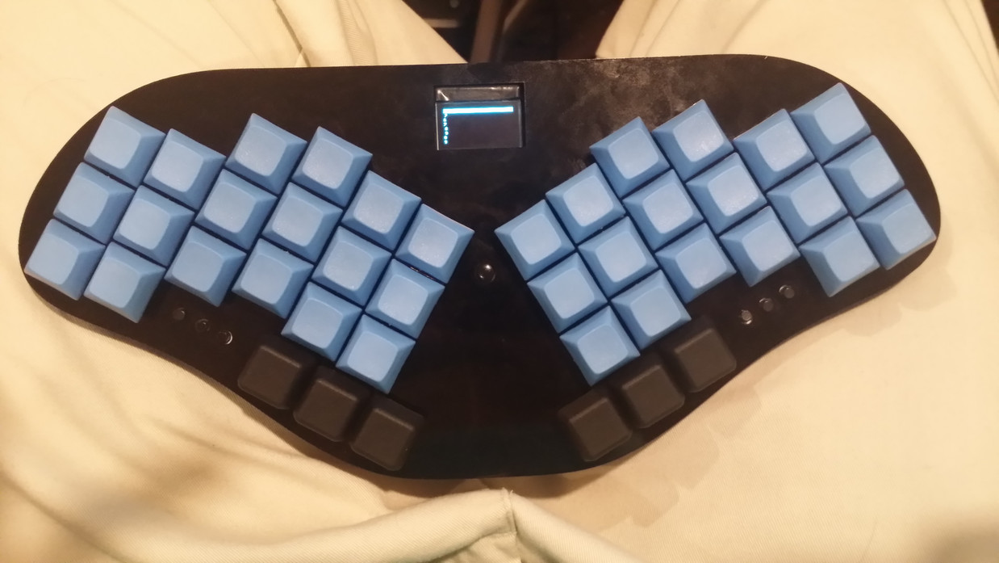

I decided I wanted a portable ergonomic keyboard (in particular, one making good use of thumb keys). I was trying to decide between a few different options, but there was nothing quite like what I wanted, so I decided to make my own!
Here are some pictures of the build process:

I designed these in AutoCAD, and had them cut by Ponoko.

I elected to use an acrylic cement to attach the pieces instead of using screws, since I wanted to be able to make the wall as thin as possible. This was a very tense process, since I didn't have any spare pieces if I messed up. You can see a little bit of the prototype breadboard setup on the top right of the picture, which I forgot to take any pictures of...


I used Cherry MX Black switches for the thumb switches, and Cherry MX Brown switches for all the other keys. I had a few issues fitting the switches in, and had to file most of the holes a little bit, but it worked out.



It does indeed work! The firmware (available here) is still a work-in-progress, but I can type with it over both USB and Bluetooth.